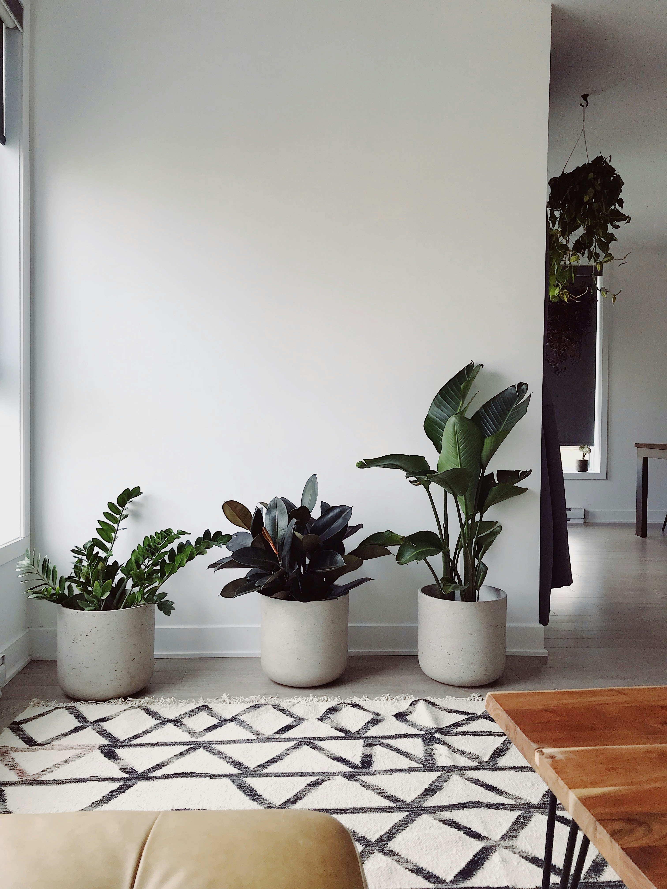
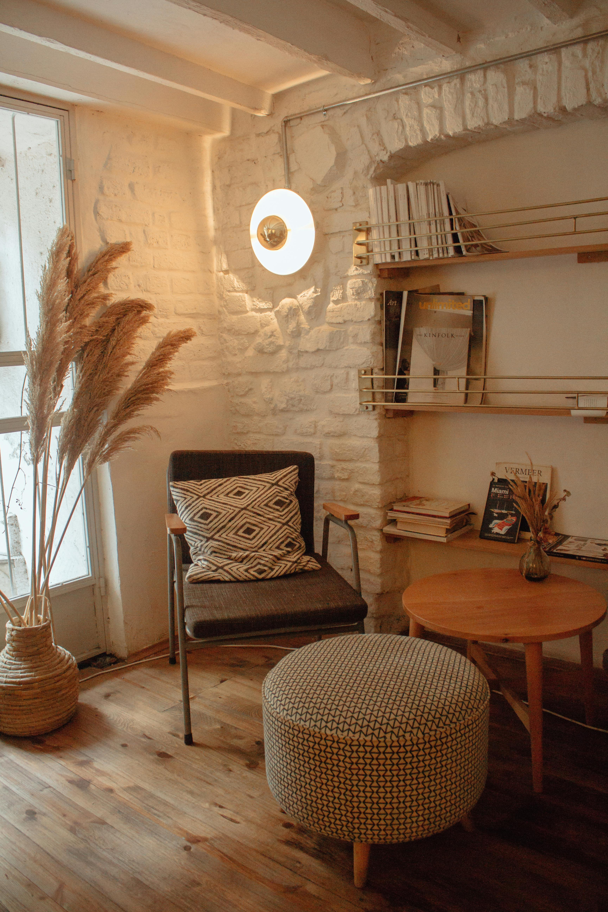
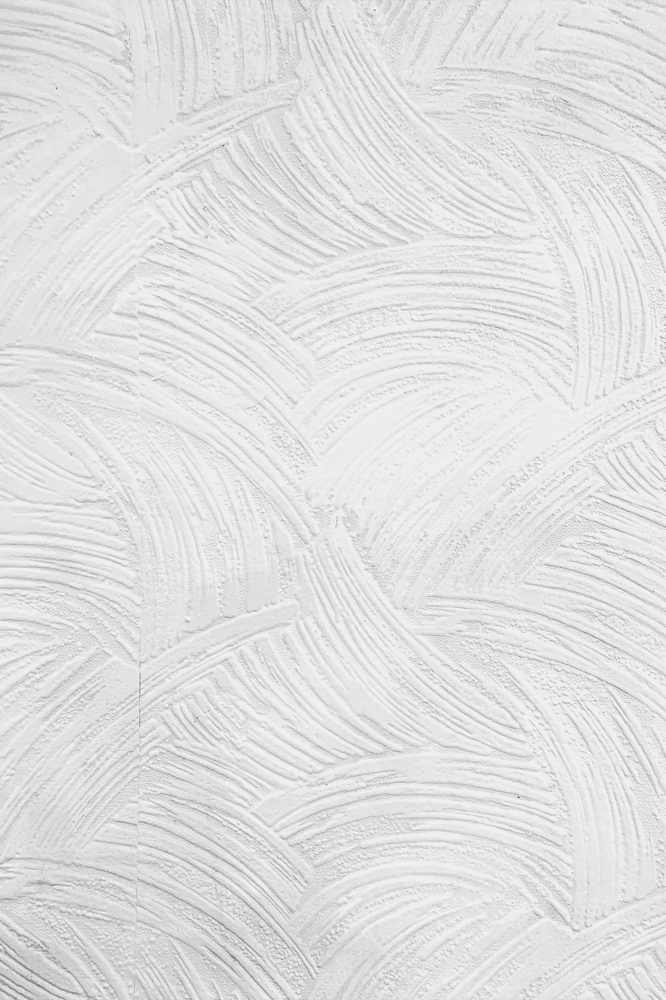
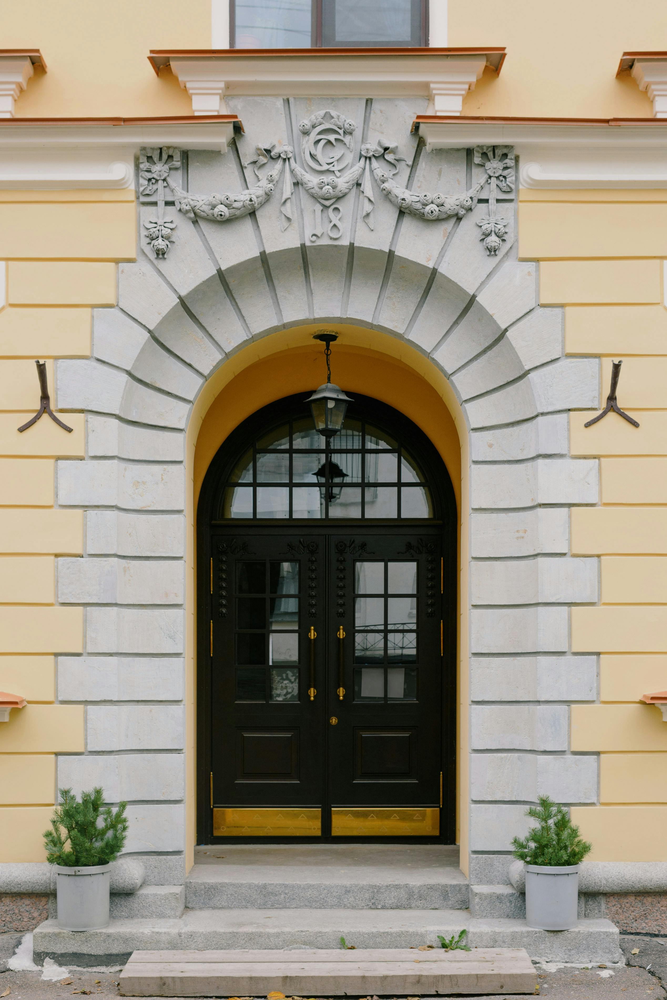
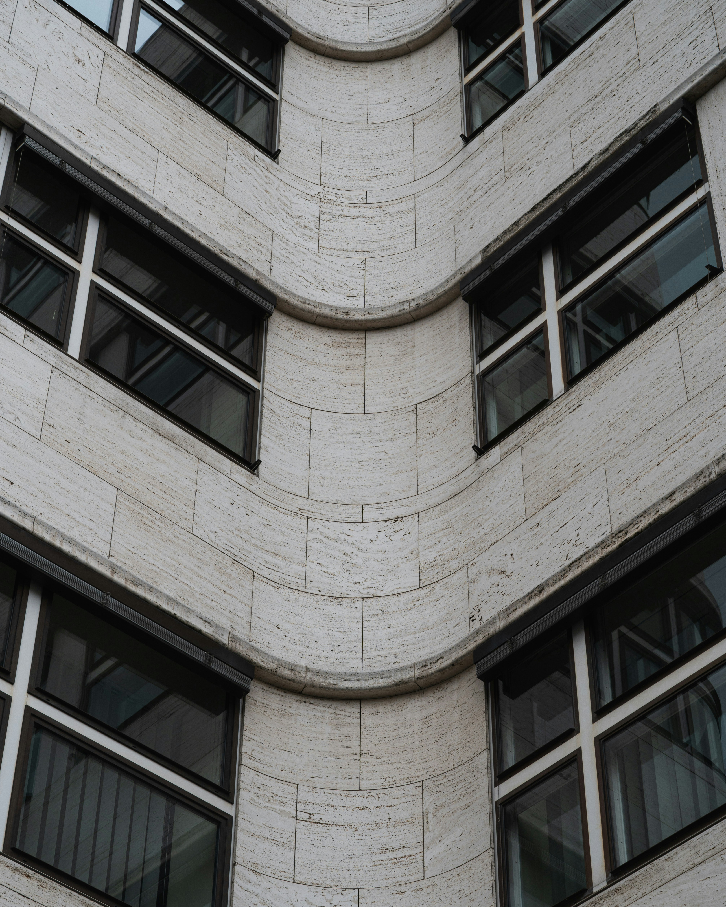
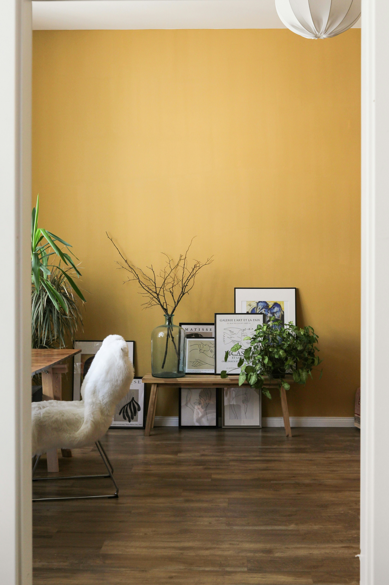

Vorbereitung
Untergründe, Kanten und angrenzende Bauteile werden ruhig und sauber mitgedacht.
Für Wohnungen, Häuser und ausgewählte Gewerbeprojekte in Berlin: hochwertige Malerarbeiten, präzise Renovierungen und stimmige Farbkonzepte – sauber geplant und mit einem sicheren Blick für Wirkung umgesetzt.


Vorbereitung, Materialgefühl und ein sicherer Blick für Raumwirkung entscheiden darüber, ob Flächen nur neu aussehen oder wirklich hochwertig wirken. Genau darin liegt der Unterschied zwischen reinem Streichen und professionell gestalteter Oberfläche.
Untergründe, Kanten und angrenzende Bauteile werden ruhig und sauber mitgedacht.
Oberflächen sollen nicht beliebig aussehen, sondern zum Raum und zum Licht passen.
Farbe wird als architektonisches Mittel eingesetzt, nicht als dekorativer Nachgedanke.
Die Seite priorisiert Innenräume, Fassaden, Renovierung und Farbkonzepte direkt zu Beginn. Jede Leistung bleibt kompakt, verständlich und sichtbar hochwertig inszeniert.
Malerarbeiten für Wände, Decken und Raumflächen mit Fokus auf saubere Ausführung, harmonische Wirkung und hochwertige Oberflächen.
Fassadenanstriche und Außenflächen mit Blick auf Werterhalt, gepflegte Präsenz und eine stimmige architektonische Wirkung.
Sorgfältige Renovierungsarbeiten im Bestand, bei denen Vorbereitung, Schutz der Umgebung und ein sauberes Endergebnis im Mittelpunkt stehen.
Farbberatung und abgestimmte Gestaltungslösungen, die Räume strukturieren, Lichtverhältnisse berücksichtigen und Sicherheit in Entscheidungen geben.


Hochwertige Innenräume wirken ruhig, klar und selbstverständlich. Genau deshalb stehen bei dieser Konzeptseite Oberfläche, Lichtführung und saubere Proportionen im Vordergrund. Farbe unterstützt das Raumgefühl, ohne laut zu werden.
Fassadenanstriche prägen, wie ein Gebäude gelesen wird. Gepflegte Flächen, stimmige Töne und saubere Details stärken den architektonischen Eindruck und unterstützen den Werterhalt, ohne technisch oder dekorativ zu wirken.


Dieser Bereich hebt die Seite sichtbar von Standard-Malerseiten ab. Farbkonzepte werden nicht als Beiwerk gezeigt, sondern als Beratungsleistung, die Räume klärt, Entscheidungen absichert und Qualität im Ergebnis spürbar macht.

Der Ablauf bleibt numerisch, präzise und bewusst schlank. Jeder Schritt ist klar benannt und führt ohne Umwege zum Ergebnis.
Räume, Fassade und Bestand einordnen.
Leistung, Töne und Oberflächen präzise abstimmen.
Untergründe schützen, Flächen sauber aufbauen.
Ruhig, präzise und hochwertig fertigstellen.
Der Case bleibt bewusst als Konzept formuliert und zeigt anhand einer Berliner Wohnsituation, wie Farbdramaturgie, Oberflächenqualität und Nutzerführung zu einem hochwertigen Showcase zusammenfinden.
Unsichere Farbrichtung, wenig Tiefe im Raumgefühl und ein Bestand, der zwar intakt, aber nicht stimmig wirkte.
Eine warme Akzentfläche, helle Begleitflächen und kontrollierte Übergänge geben dem Raum Struktur, ohne ihn schwer wirken zu lassen.
Die Wohnung wirkt ruhiger, hochwertiger und präziser geführt. Genau diese Wirkung trägt den Showcase-Charakter der Seite.
Ja, die Positionierung ist klar auf Berlin ausgerichtet und spricht Projekte in den typischen Wohn- und Stadtlagen der Stadt an.
Ja, gerade Renovierungen im Bestand sind ein zentraler Teil der Leistung und werden mit Vorbereitung und sauberem Schutz der Umgebung gedacht.
Ja, Farbkonzepte sind bewusst als eigenständige Qualitätsleistung formuliert und nicht nur als Zusatz zum Anstrich.
Ja, die Seite führt beide Leistungsbereiche gleichwertig und zeigt sie in unterschiedlicher gestalterischer Tonalität.
Ja, allerdings bewusst für ausgewählte Gewerbeeinheiten, damit die Positionierung hochwertig und glaubwürdig bleibt.
Diese Portfolio-Konzeptseite zeigt, wie marktgerechte Inhalte und eine bewusst kuratierte Premium-Anmutung zusammenfinden: klar in der Ansprache, hochwertig in Typografie, Bildführung und Motion, transparent als Showcase innerhalb der Agentur-Website.